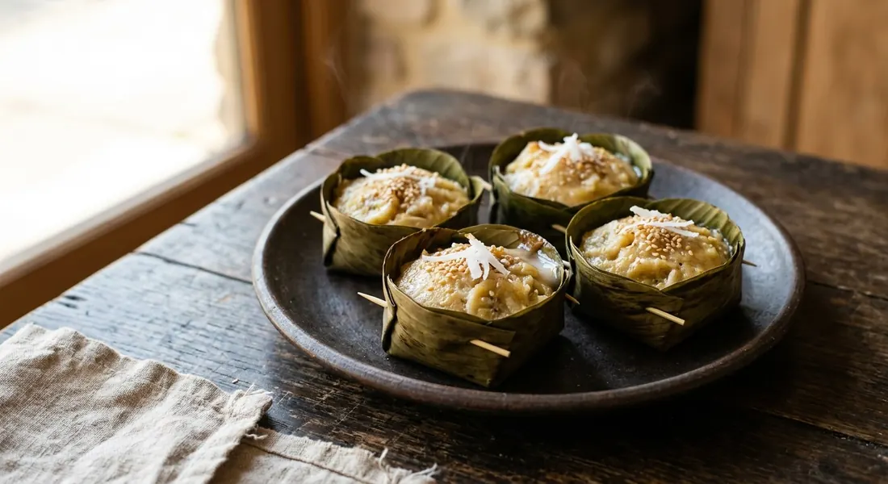

Ripe bananas kneaded with rice flour, coconut cream and grated coconut, steamed in banana-leaf cups until dense and fudgy. Thailand's answer to the question of what to do with a hand of bananas that has gone black.

The name is the whole recipe: ขนม — a sweet or snack — and กล้วย, banana. No eggs, no butter, no raising agent, no oven. Ripe nam wa bananas (กล้วยน้ำว้า), rice flour, tapioca starch, sugar and coconut cream are kneaded into a thick batter, spooned into little banana-leaf cups or clay thai ramekins (ถ้วยตะไล) and steamed. What comes out is less like a sponge and more like a dense banana fudge — set, slightly chewy, scented with coconut. The wordplay is deliberate: in Thai, เรื่องกล้วย ๆ means an easy matter, and this is the easy sweet — the one you make when a whole hand of bananas has ripened past the point of eating.
The traditional banana matters. Thai sources specify กล้วยน้ำว้า — the nam wa banana, the common Thai cooking banana — and Aroifin's recipe page notes why it deserves the spot: nam wa bananas are rich in vitamin A, B1, B2 and niacin, and Thai traditional medicine treats the ripe fruit as a remedy for sore throats and constipation. The same page adds the caution that comes with the coconut cream: fine in moderation, but it is saturated fat, so nobody eats khanom kluay by the tray.
At the market, the sweet rarely appears alone. Aroifin notes that khanom kluay is usually sold side by side with khanom fak thong (ขนมฟักทอง), its pumpkin twin made the same way. The pair — one golden-brown, one orange — are the classic Thai market-stall sweets, and TrueID's version pitches khanom kluay the way the vendors see it: cheap ingredients, easy method, reliable profit, a legitimate career for home cooks selling at local markets.
Krua.co's recipe adds the traditionalist's detail. Its coconut cream is not poured from a tin but pressed from 500 g of grated coconut and a cup of warm water, and the whole batch can be steamed as one 7-inch square tray, cooled and cut into 2 × 2-inch pieces — the version you still find at old-school sweet shops, alongside the cups and banana-leaf wraps.
| Thai | English | Amount |
|---|---|---|
| กล้วยน้ำว้า | Ripe nam wa bananas | 10, about 600 g |
| แป้งข้าวเจ้า | Rice flour | 1 cup |
| แป้งมัน | Tapioca starch | ¼ cup |
| น้ำตาลทราย | Granulated sugar | 1¼ cups |
| เกลือป่น | Salt | ½ tsp |
| หัวกะทิ | Thick coconut cream | ½ cup |
| เนื้อมะพร้าวขูด | Grated mature coconut | 2 cups (keep ¼ cup back for the topping) |
Arrowroot version (TrueID, Krua.co): add 1 tbsp arrowroot starch (แป้งท้าวยายม่อม) to the flours for extra bounce. Young coconut version (TrueID): use very ripe bananas, add 300 g young coconut meat (เนื้อมะพร้าวอ่อน) to the batter, and steam 30–40 minutes. Square-tray version (Krua.co): steam the whole batch in a greased 7-inch square tray for 20–25 minutes, cool, cut into 2 × 2-inch pieces.
How ripe is ripe. Aroifin is the outlier: use nam wa bananas that are ripe but not overripe, or the cakes lose their structure. Wongnai, TrueID and Krua.co all want them very ripe — black-peel ripe, the point where the fruit is at its sweetest and the banana flavour is strongest. The difference is a matter of taste against texture.
Arrowroot starch. TrueID and Krua.co add a spoon of arrowroot starch (แป้งท้าวยายม่อม) to the rice flour and tapioca starch for a springier, chewier bite. Wongnai and Aroifin leave it out entirely and get their chew from the kneading alone. Both versions are the real thing; the arrowroot one is the chewier of the two.
The mould and the clock. Steamed in small cups, Wongnai and Aroifin steam for a full 30 minutes, while TrueID's flour-light cup version is done in 20. Krua.co steams the whole batch as a single 7-inch tray for 20–25 minutes and cuts it into squares afterwards. The rule underneath all of them: the shallower the container, the shorter the steam.
The knead. Wongnai and Aroifin knead just until the mixture comes together. TrueID kneads the flour paste for 5 minutes. Krua.co kneads for 10–15 minutes, adding the cream and sugar in stages. Kneading develops the slightly elastic, chewy texture, so the disagreement is really about how chewy the finished cake should be.
This recipe is translated from the following Thai-language sources. Where they disagree, we've said so.
1. Aroifin — "วิธีทำ ขนมกล้วย มะพร้าวอ่อน วัตถุดิบน้อย ทำง่าย หวานอร่อย!!!" (the recipe used here; nam wa banana notes; kneading and coconut tips) — aroifin.com
2. Wongnai — "วิธีทำ 'ขนมกล้วย' เมนูขนมไทยรสหวานหอม ทำง่าย อร่อยได้ภายใน 30 นาที!" (the recipe used here; the use-up-your-black-bananas framing) — wongnai.com
3. Food.trueid.net — "สูตรทำ ขนมกล้วย มะพร้าวอ่อน สูตรแป้งน้อย อร่อยมาก เมนูทำขายสร้างอาชีพ!" (แม่ซี น้องมดดี้ channel; the arrowroot, young-coconut and selling versions; steaming times) — food.trueid.net
4. Krua.co — "ขนมกล้วย" (the square-tray method; fresh-pressed coconut cream; the 10–15 minute knead) — krua.co
5. Kapook — "วิธีทำขนมกล้วย สูตรขนมไทยทำง่าย ๆ สมชื่อ" (the core ingredient set: 500 g bananas, 100 g rice flour, 5 tbsp tapioca starch, 200 ml coconut cream, banana-leaf cups or Thai ramekins) — cooking.kapook.com